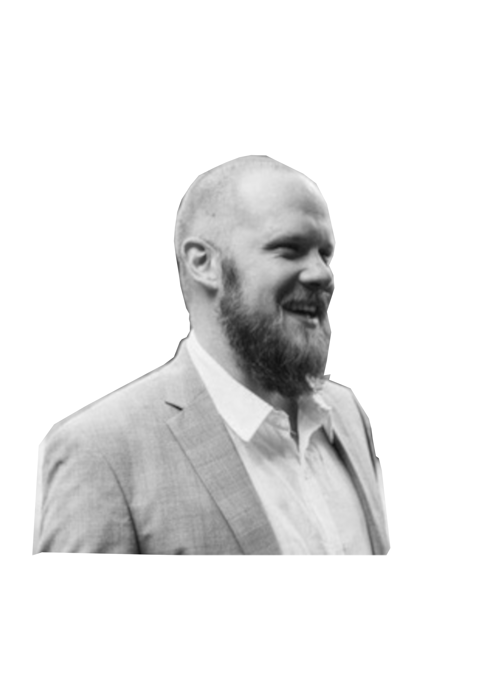
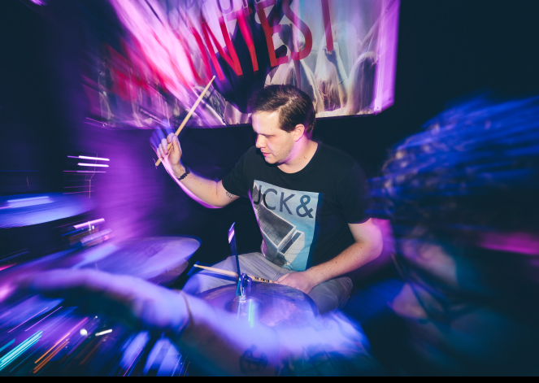
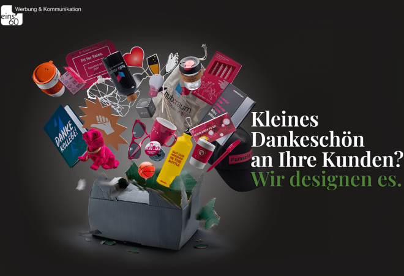
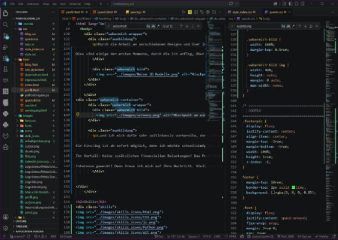
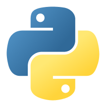

Willkommen auf meinem Profil!
Freut mich, dass Sie bei mir vorbeischauen!
Marvyn Melzer
zukünftiger


Die Fachkraft für Veranstaltungstechnik war mein erster Ausbildungsberuf, in dem ich bis 2019 aktiv war. Dort habe ich gelernt, wie man komplexe technische Systeme versteht, aufbaut und sicher betreibt. Ob Licht, Ton oder Bühnentechnik – ich habe früh gelernt, strukturiert zu arbeiten, Probleme schnell zu analysieren und technische Abläufe zuverlässig umzusetzen. Dieses technische Fundament begleitet mich heute in der Softwareentwicklung.
Mit mehreren Bands war ich von 2011 - 2020 auf circa 500 Konzerten aktiv und konnte mit der Band "The Jukes" den Hessischen und den Deutschen Rock & Pop Preis 2015, sowie weitere Contests gewinnen. Hierbei konnte ich mein technisches Geschick bei der Organisation und dem Auf- und Abbauen von Veranstaltungen, oder dem Schlagzeug spielen einbringen und weiter verbessern. Beim Erstellen neuer Songs oder neuer Designs für Alben, Flyer, Tickets und Content auf Social-Media-Kanälen konnte ich meiner kreativen Ader freien lauf lassen.


2016 begann ich mich nebenbei intensiver mit Grafikdesign zu beschäftigten, also schaute ich mich in dem Berufsfeld um und machte mich dort selbstständig.
Für Unternehmen wie einem Telekom-Partner in Frankfurt, einer Werbeagentur in Frankfurt, einer Saunalandschaft in Dietzenbach, Bands aus dem Rhein-Main-Gebiet und weiteren Kunden entwarf ich verschiedene Produkte.
Darunter User Interfaces, Videos, Trailer, Albumdesigns, Flyer, Poster, Banner, Tickets, Merch bis hin zu Werbeartikeln in verschiedenen Größen.
Durch die Arbeit an verschiedenen Designs kam ich zu dem Hobby, Modelle in 3D-Programmen zu erstellen. Hierbei kam ich schnell an einen Punkt, an dem ich auch Logik, Ansicht und Steuerung innerhalb der 3D-Engine implementieren wollte.
Dies sind einige der ersten Momente, durch die ich anfing, über die Arbeit als Anwendungsentwickler nachzudenken und meine Lieblingsbeschäftigung zum Beruf zu machen.
Im letzten Jahr eröffnete sich für mich eine neue Möglichkeit: Eine Umschulung meiner Wahl, in der ich mich für meinen Wunsch Anwendungsentwickler zu werden, entschied...


…und ich mich dafür sehr zeitintensiv vorbereite, denn aktuell absolviere ich meine Umschulung zum Fachinformatiker für Anwendungsentwicklung. Ich suche ein Unternehmen, in dem ich mein Wissen im Rahmen eines Praktikums in der Praxis vertiefen kann, von erfahrenen Entwicklern lerne und mich fachlich wie persönlich weiterentwickeln kann. Ein Einstieg ist ab sofort möglich, denn ich möchte schnellstmöglich an realen Projekten mitwirken, mein technisches Wissen kontinuierlich ausbauen und dabei neue Entwicklungsprozesse kennen lernen. Dafür bringe ich Motivation, Lernbereitschaft und eine strukturierte Arbeitsweise mit. Ihr Vorteil: Keine zusätzlichen finanziellen Belastungen! Das Praktikum erfolgt über den IBB und gilt damit als ein unbezahltes Praktikum. Dazu erhalten Sie die Möglichkeit, einen engagierten angehenden Anwendungsentwickler kennenzulernen und bei Interesse frühzeitig als potenziellen Mitarbeiter aufzubauen. Interesse geweckt? Dann freue ich mich auf Ihre Nachricht. Vielleicht lernen wir uns schon bald persönlich kennen
